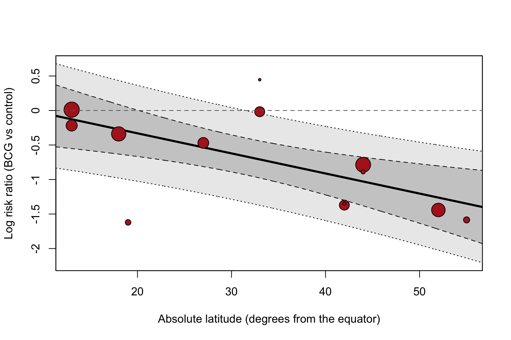
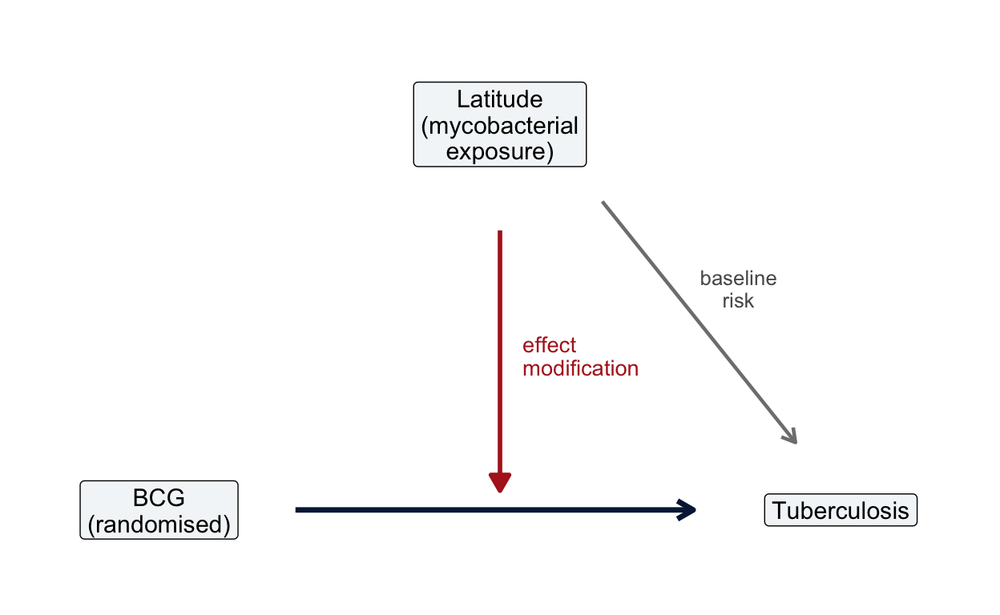
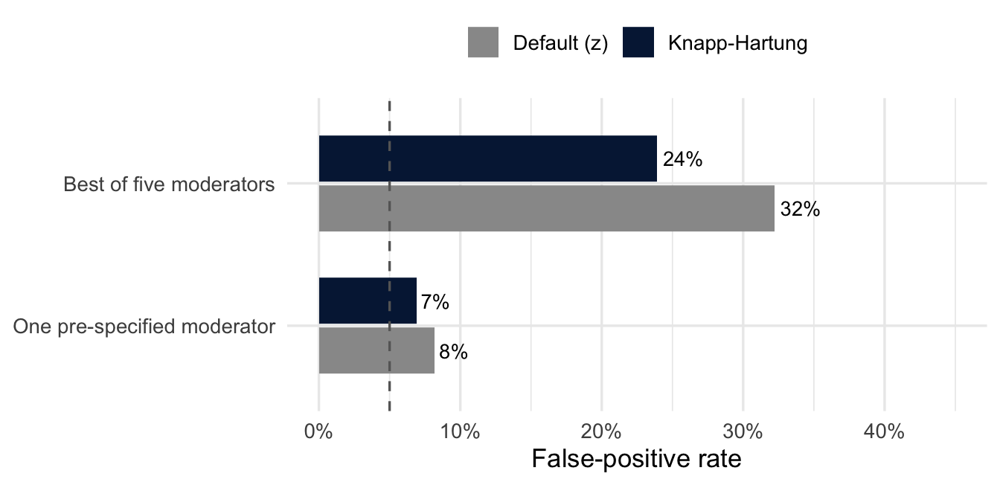
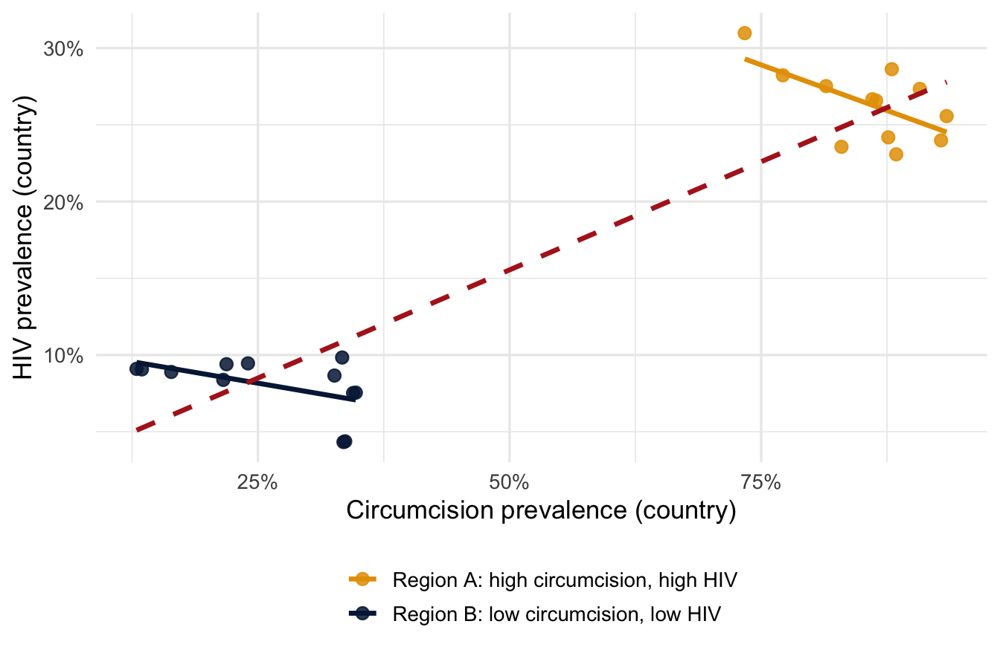
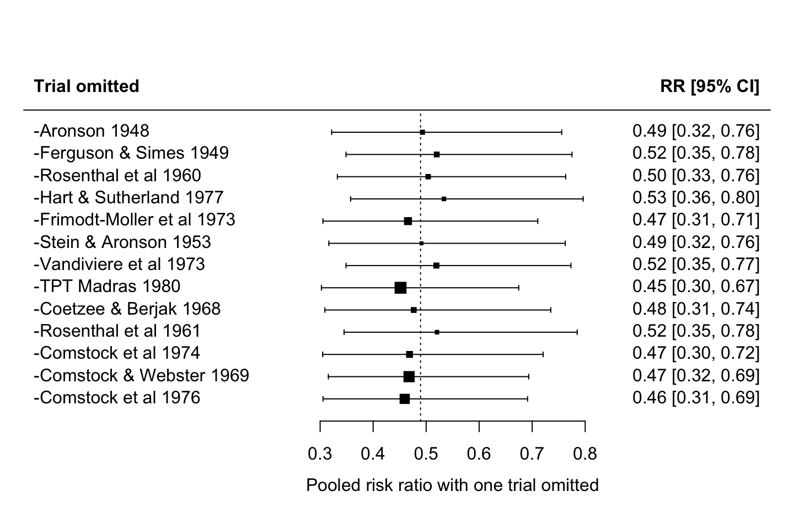
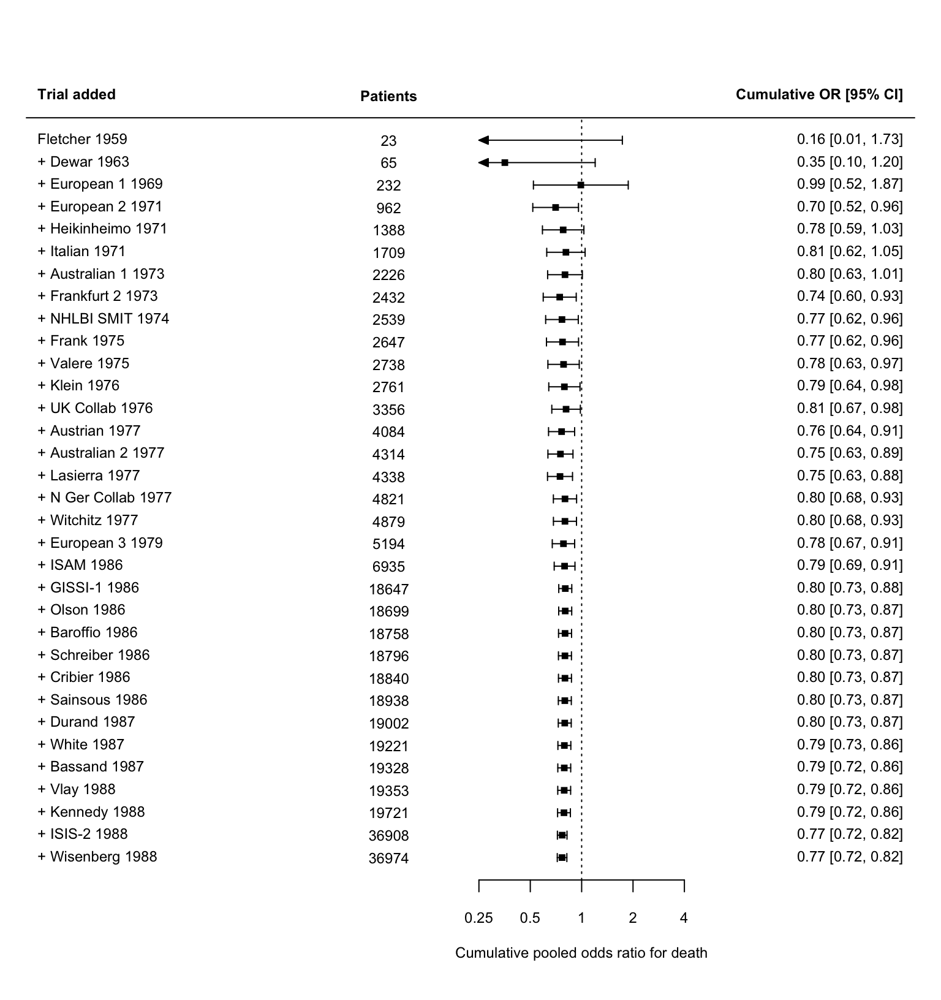
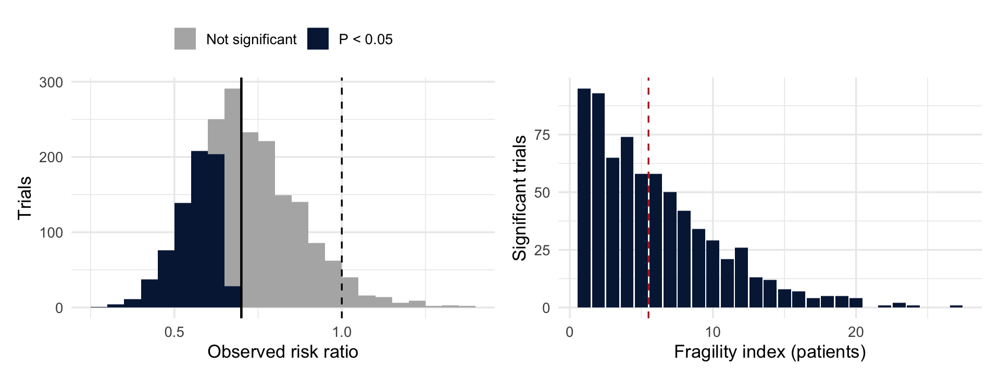

Code
bcg <- escalc(measure = "RR", ai = tpos, bi = tneg, ci = cpos, di = cneg,
data = dat.bcg, slab = paste(author, year))
m_bcg <- rma(yi, vi, data = bcg, method = "REML", test = "knha")By the end of this chapter you should be able to:
R packages: dplyr, tidyr, purrr, ggplot2, metafor, knitr.
Chapter 9 described heterogeneity: how much the true effects vary, and what that means for a new setting. This chapter asks two further questions. Can the heterogeneity be explained? And how robust is the pooled result to the studies included and the methods chosen? The first is answered, cautiously, by meta-regression; the second by a set of sensitivity analyses that every meta-analysis should plan in advance.
The 13 BCG vaccine trials of Section 9.4 disagree far more than chance allows: I² is over 90%, and the prediction interval runs from strong protection to none. Rather than stop at “the pooled effect is unreliable”, we can ask why the trials differ. The hypothesis of long standing, put forward before these trials were assembled, is geographic: BCG protects less near the equator (1).
bcg <- escalc(measure = "RR", ai = tpos, bi = tneg, ci = cpos, di = cneg,
data = dat.bcg, slab = paste(author, year))
m_bcg <- rma(yi, vi, data = bcg, method = "REML", test = "knha")The random-effects model of Section 9.3 has two layers: each observed log RR \(y_i\) is the trial’s true effect plus sampling error, and the true effects scatter around a mean μ:
\[y_i = \theta_i + \varepsilon_i,\quad \varepsilon_i \sim N(0, v_i); \qquad \theta_i = \mu + u_i,\quad u_i \sim N(0, \tau^2).\]
Meta-regression replaces the single mean by a line in a study-level covariate, here the trial’s absolute latitude:
\[\theta_i = \alpha + \beta\,\text{latitude}_i + u_i, \qquad u_i \sim N(0, \tau^2_{\text{res}}).\]
\(\alpha\) is the predicted log RR at the equator, \(\beta\) the change in log RR per degree of latitude, and \(\tau^2_{\text{res}}\) the heterogeneity left over once latitude is accounted for. The model is a weighted regression in which each trial’s weight is \(1/(v_i + \tau^2_{\text{res}})\) (2,3).
m_reg <- rma(yi, vi, mods = ~ ablat, data = bcg, method = "REML", test = "knha")
m_reg
Mixed-Effects Model (k = 13; tau^2 estimator: REML)
tau^2 (estimated amount of residual heterogeneity): 0.0764 (SE = 0.0591)
tau (square root of estimated tau^2 value): 0.2763
I^2 (residual heterogeneity / unaccounted variability): 68.39%
H^2 (unaccounted variability / sampling variability): 3.16
R^2 (amount of heterogeneity accounted for): 75.62%
Test for Residual Heterogeneity:
QE(df = 11) = 30.7331, p-val = 0.0012
Test of Moderators (coefficient 2):
F(df1 = 1, df2 = 11) = 12.5905, p-val = 0.0046
Model Results:
estimate se tval df pval ci.lb ci.ub
intrcpt 0.2515 0.2839 0.8857 11 0.3948 -0.3735 0.8764
ablat -0.0291 0.0082 -3.5483 11 0.0046 -0.0472 -0.0111 **
---
Signif. codes: 0 '***' 0.001 '**' 0.01 '*' 0.05 '.' 0.1 ' ' 1Each degree of latitude away from the equator multiplies the RR by 0.971 (95% CI 0.954 to 0.989), a further relative reduction in risk of about 2.9% per degree. The predicted RR is 1.29 at the equator, no protection at all, and 0.30 at 50°. Figure 10.1 shows the fit.
regplot(m_reg, mod = "ablat", pi = TRUE, shade = c("grey80", "grey92"),
xlab = "Absolute latitude (degrees from the equator)",
ylab = "Log risk ratio (BCG vs control)", bg = "#B22222")
abline(h = 0, lty = 2, col = "grey40")
The output reports R² = 76% and a residual I² of 68%. Both are correct, because they measure different things.
R² is the proportional reduction in τ² when latitude is added: from 0.313 to 0.076, \((\tau^2 - \tau^2_{\text{res}})/\tau^2\) = 76%. I² compares the remaining τ² with the trials’ sampling variances. These are mostly large trials with small sampling variances (a typical value is about 0.035), so even the reduced τ² dominates and I² stays high. The residual τ of 0.28 means that at any given latitude the true RRs still vary by a factor of about 1.7 either way. Latitude explains much of the heterogeneity, not all of it.
By default, rma() treats the standard errors of the coefficients as known and tests the moderator with a χ² statistic. Those standard errors depend on \(\hat\tau^2\), estimated from 13 trials, so the default tests are too liberal. test = "knha" applies the Hartung-Knapp-Sidik-Jonkman logic of Section 9.3.2: it rescales the standard errors by the scatter of the trials around the regression line and uses t and F distributions with \(k - p\) degrees of freedom (4). Here the moderator test becomes F(1, 11) = 12.6, P = 0.005, compared with χ²(1) = 16.4, P = 5.2e-05 by default. The evidence for latitude survives the adjustment; weaker moderators often do not. REML is preferable to ML for τ² in meta-regression for the reason given in Section 9.3.1: ML ignores the degrees of freedom used by the coefficients, and each moderator uses one more.
Latitude here is an effect modifier: a characteristic that changes the size of the treatment effect. It is not a confounder of the BCG effect, because within each trial the vaccine was randomised. Figure 10.2 makes the distinction.
nodes <- tibble::tibble(x = c(0, 3, 1.5), y = c(0, 0, 2),
lab = c("BCG\n(randomised)", "Tuberculosis", "Latitude\n(mycobacterial\nexposure)"))
ggplot() +
annotate("segment", x = 0.6, y = 0, xend = 2.35, yend = 0, linewidth = 1.2,
arrow = arrow(length = unit(0.3, "cm")), colour = "#041E42") +
annotate("segment", x = 1.95, y = 1.6, xend = 2.8, yend = 0.35, linewidth = 0.8,
arrow = arrow(length = unit(0.25, "cm")), colour = "grey50") +
annotate("segment", x = 1.5, y = 1.45, xend = 1.5, yend = 0.1, linewidth = 1,
arrow = arrow(length = unit(0.3, "cm"), type = "closed"), colour = "#B22222") +
annotate("text", x = 1.6, y = 0.8, label = "effect\nmodification", hjust = 0,
size = 3.6, colour = "#B22222", lineheight = 0.9) +
annotate("text", x = 2.55, y = 1.15, label = "baseline\nrisk", size = 3.4,
colour = "grey35", lineheight = 0.9) +
geom_label(data = nodes, aes(x, y, label = lab), size = 4, fill = "#F4F6F8", lineheight = 0.9) +
coord_cartesian(xlim = c(-0.5, 3.5), ylim = c(-0.4, 2.5)) +
theme_void()
Within a trial everyone shares the same latitude, so there is nothing to “adjust for”. The question “does the BCG effect change with latitude?” is a question about the treatment effect across trials, with the effect estimate as the outcome and latitude as the covariate. Meta-regression is the study-level analogue of a treatment-by-latitude interaction.
A plausible mechanism, stated before the analysis, is what distinguishes a credible moderator from a lucky one. For latitude there are two. Non-tuberculous mycobacteria in soil and water are more common in warm, humid regions, and childhood exposure to them may give partial immunity, so that BCG adds little, or may block the replication of the live vaccine; and BCG, a live vaccine, may lose viability in tropical conditions (1). Latitude is a proxy for these mechanisms, not the mechanism itself.
Although the vaccine was randomised within each trial, latitude was not randomised across trials. Trials at different latitudes also differ in when they were done, how they allocated participants, which BCG strain they used and how they diagnosed tuberculosis. Any of these can masquerade as a latitude effect, or hide one. The BCG data record two such characteristics, year of publication and method of allocation.
fit_mod <- function(f) {
m <- rma(yi, vi, mods = f, data = bcg, method = "REML", test = "knha")
tibble::tibble(Moderators = deparse(f[[2]]) |> sub(pattern = "ablat", replacement = "latitude") |>
sub(pattern = "alloc", replacement = "allocation method"), `R² (%)` = sprintf("%.0f", m$R2),
`Residual I² (%)` = sprintf("%.0f", m$I2),
`Moderator test P` = sprintf("%.3f", m$QMp))
}
map_dfr(list(~ ablat, ~ year, ~ alloc, ~ ablat + year), fit_mod) |>
kable(align = "lrrr",
caption = sprintf("Meta-regressions of the BCG trials (REML, Knapp-Hartung tests). Latitude and year are correlated (r = %.2f).",
cor(bcg$ablat, bcg$year)))| Moderators | R² (%) | Residual I² (%) | Moderator test P |
|---|---|---|---|
| latitude | 76 | 68 | 0.005 |
| year | 15 | 88 | 0.129 |
| allocation method | 0 | 89 | 0.413 |
| latitude + year | 65 | 72 | 0.032 |
Year alone explains some heterogeneity, because the later trials were done nearer the equator. With both in the model, latitude still carries most of the explanatory power. (R² is lower with both covariates than with latitude alone; R² is computed from two separately estimated values of τ², and with 13 trials it is itself imprecise.) With only 13 trials, though, that is as far as the data can go: they cannot separate latitude from everything that travels with it. A meta-regression association is observational evidence about effect modification, and is subject to the confounding and bias of any observational study (3).
Two further problems follow from analysing studies rather than patients.
Meta-regressions usually have few studies and many candidate moderators: dose, duration, year, setting, risk of bias, mean age, proportion of women. Testing them one at a time, and reporting the “significant” ones, produces false positives. Figure 10.3 simulates meta-analyses of 10 trials with true heterogeneity but no real moderators, and tests five random study-level characteristics in each.
dredge_once <- function(k = 10, n_mods = 5, tau2 = 0.1) {
vi <- runif(k, 0.02, 0.2)
yi <- rnorm(k, log(0.8), sqrt(tau2 + vi)) # no moderator affects yi
X <- matrix(rnorm(k * n_mods), k)
p <- map(seq_len(n_mods), \(j) {
c(z = rma(yi, vi, mods = ~ X[, j], method = "REML", control = ctl)$QMp,
knha = rma(yi, vi, mods = ~ X[, j], method = "REML", test = "knha", control = ctl)$QMp)
}) |> do.call(what = rbind)
c(z_one = unname(p[1, "z"] < 0.05), knha_one = unname(p[1, "knha"] < 0.05),
z_any = any(p[, "z"] < 0.05), knha_any = any(p[, "knha"] < 0.05))
}
set.seed(10)
dredge <- replicate(1000, tryCatch(dredge_once(), error = \(e) rep(NA, 4))) |>
rowMeans(na.rm = TRUE)tibble::tibble(test = rep(c("Default (z)", "Knapp-Hartung"), 2),
scope = rep(c("One pre-specified moderator", "Best of five moderators"), each = 2),
p = dredge[c("z_one", "knha_one", "z_any", "knha_any")]) |>
mutate(scope = factor(scope, levels = c("One pre-specified moderator", "Best of five moderators"))) |>
ggplot(aes(p, scope, fill = test)) +
geom_col(position = position_dodge(width = 0.7), width = 0.65) +
geom_text(aes(label = sprintf("%.0f%%", 100 * p)), position = position_dodge(width = 0.7),
hjust = -0.15, size = 3.6) +
geom_vline(xintercept = 0.05, linetype = "dashed", colour = "grey40") +
scale_fill_manual(values = c("grey60", "#041E42"), name = NULL) +
scale_x_continuous(labels = scales::percent, limits = c(0, 0.45)) +
labs(x = "False-positive rate", y = NULL) +
theme(legend.position = "top")
With one pre-specified moderator, the Knapp-Hartung test keeps close to its nominal 5% error rate (7%) while the default test exceeds it (8%). Choosing the best of five moderators gives a “significant” result in 24% of meta-analyses with the Knapp-Hartung test and 32% with the default: no adjustment of the test can correct for the selection. The Cochrane Handbook advises that meta-regression should generally not be considered with fewer than ten studies, and that the characteristics examined be pre-specified in the protocol, few in number and with a scientific rationale (5).
Section 9.6.3 showed that adding the 2×2 tables of different trials into one table breaks randomisation and can reverse the direction of an effect. The mistake has been made in print: a 1999 meta-analysis of male circumcision and HIV that pooled raw counts found circumcised men at higher risk, while a within-study analysis of the same studies showed the opposite (Section 6.4) (6,7).
The same paradox has an ecological form that matters for meta-regression and for comparisons across countries. Figure 10.4 simulates countries in two regions. Within each region, countries with more circumcision have less HIV. But the region with more circumcision also has more HIV for other reasons, so a regression across all countries points the wrong way.
set.seed(42)
eco <- tibble::tibble(
region = rep(c("Region A: high circumcision, high HIV",
"Region B: low circumcision, low HIV"), each = 12),
circ = c(runif(12, 0.70, 0.95), runif(12, 0.10, 0.35))) |>
mutate(hiv = if_else(startsWith(region, "Region A"), 0.40, 0.12) - 0.15 * circ +
rnorm(n(), 0, 0.015))
b_all <- coef(lm(hiv ~ circ, data = eco))[["circ"]]
b_within <- coef(lm(hiv ~ circ + region, data = eco))[["circ"]]
ggplot(eco, aes(circ, hiv)) +
geom_point(aes(colour = region), size = 2.6, alpha = 0.85) +
geom_smooth(aes(colour = region), method = "lm", se = FALSE, formula = y ~ x) +
geom_smooth(method = "lm", se = FALSE, formula = y ~ x, colour = "#B22222",
linetype = "dashed") +
scale_colour_manual(values = c("#E69F00", "#041E42"), name = NULL) +
scale_x_continuous(labels = scales::percent) + scale_y_continuous(labels = scales::percent) +
labs(x = "Circumcision prevalence (country)", y = "HIV prevalence (country)") +
theme(legend.position = "bottom", legend.direction = "vertical")
Within regions the slope is -0.15 (protective); across all countries it is +0.28 (apparently harmful). Region is a confounder of the between-country comparison, related both to circumcision and to HIV. Studies in a meta-regression are like these countries: they differ in many ways at once, and an association across studies can reverse the association within them. The remedies are the same as for any confounded comparison: compare within strata where possible (within-study comparisons, individual patient data), and treat across-study associations as hypotheses, not findings.
Section 9.5 showed a conclusion that depended on the choice of estimator and interval. A pre-specified primary method, with a set of alternatives as sensitivity analyses, is the defence against both fragility and “method shopping”, in which analyses are tried until one gives the desired answer.
The data below are simulated: nine hypothetical trials of continuous labour support (by a doula, nurse or midwife) with epidural use as the outcome. The clinical question is borrowed from a real Cochrane topic, but the counts are invented for teaching.
cb <- data.frame(study = paste("Trial", 1:9),
ai = c(10, 18, 22, 13, 40, 25, 8, 30, 15), # epidurals, support
n1i = c(55, 80, 95, 60, 135, 110, 45, 120, 70),
ci = c(22, 30, 35, 18, 55, 38, 15, 48, 24), # epidurals, usual care
n2i = c(50, 75, 90, 58, 130, 105, 42, 118, 68))
cb_rr <- escalc("RR", ai = ai, n1i = n1i, ci = ci, n2i = n2i, data = cb, slab = study)
fits <- list(
"Equal effects (inverse variance)" = rma(yi, vi, data = cb_rr, method = "EE"),
"Random effects, DL, Wald" = rma(yi, vi, data = cb_rr, method = "DL"),
"Random effects, REML, Wald" = rma(yi, vi, data = cb_rr, method = "REML"),
"Random effects, REML, HKSJ" = rma(yi, vi, data = cb_rr, method = "REML", test = "knha"),
"Random effects, REML, HKSJ (ad hoc)" = rma(yi, vi, data = cb_rr, method = "REML", test = "adhoc"),
"Mantel-Haenszel" = rma.mh(measure = "RR", ai = ai, n1i = n1i, ci = ci,
n2i = n2i, data = cb))
cb_tab <- imap_dfr(fits, \(m, nm) tibble::tibble(
Method = nm, RR = exp(m$b[1]), lo = exp(m$ci.lb), hi = exp(m$ci.ub)))
cb_tab |>
mutate(`RR (95% CI)` = sprintf("%.2f (%.2f to %.2f)", RR, lo, hi),
`CI width (log scale)` = sprintf("%.3f", log(hi) - log(lo))) |>
select(Method, `RR (95% CI)`, `CI width (log scale)`) |>
kable(align = "lrr")| Method | RR (95% CI) | CI width (log scale) |
|---|---|---|
| Equal effects (inverse variance) | 0.61 (0.52 to 0.71) | 0.313 |
| Random effects, DL, Wald | 0.61 (0.52 to 0.71) | 0.313 |
| Random effects, REML, Wald | 0.61 (0.52 to 0.71) | 0.313 |
| Random effects, REML, HKSJ | 0.61 (0.55 to 0.68) | 0.214 |
| Random effects, REML, HKSJ (ad hoc) | 0.61 (0.51 to 0.73) | 0.368 |
| Mantel-Haenszel | 0.61 (0.52 to 0.71) | 0.312 |
Every method reaches the same conclusion, a reduction in epidural use of about a third, so this conclusion is robust to the method. Two features of the table are worth understanding.
Four estimates are identical. Cochran’s Q is 2.7 on 8 degrees of freedom, less than its expectation under homogeneity, so every estimator returns \(\hat\tau^2 = 0\), the random-effects weights equal the fixed-effect weights, and the models coincide. Mantel-Haenszel, with slightly different weights, is almost the same.
The HKSJ interval is narrower than the Wald interval. The HKSJ variance is rescaled by roughly Q/(k − 1) = 0.34. When the trials agree more closely than chance predicts, that factor is below 1, and the shrinkage of the standard error (by a factor of 0.58) outweighs the widening from the t multiplier (2.31 instead of 1.96). The net result is an interval 0.68 times as wide as the Wald interval, the anomaly described in Section 9.3.2. Real data this homogeneous are unusual (simulated data, and data that have been tidied, are more often too neat), but the anomaly also occurs with real data when there are few studies. The ad hoc version, which never lets the HKSJ variance fall below the Wald variance, restores the Wald interval here.
When methods disagree, which is most likely with few studies, high heterogeneity, rare events or unbalanced arms, report them all and explain the difference. Sensitivity analyses are a test of robustness, not a menu from which to choose the most favourable result.
A leave-one-out analysis repeats the meta-analysis \(k\) times, omitting each study in turn. If omitting a single study changes the estimate substantially, or moves it across a decision threshold, the conclusion rests on that study, which then deserves scrutiny: is it larger, older, at higher risk of bias, or from a different population?
loo <- leave1out(m_bcg, transf = exp)
forest(loo$estimate, ci.lb = loo$ci.lb, ci.ub = loo$ci.ub, slab = loo$slab,
refline = exp(m_bcg$b[1]), header = c("Trial omitted", "RR [95% CI]"),
xlab = "Pooled risk ratio with one trial omitted")
The estimates range only from 0.45 to 0.53: no single trial drives the average. influence(m_bcg) adds formal diagnostics, such as studentised residuals and Cook’s distances, that flag outlying or influential studies. Robust average, unexplained spread: the leave-one-out analysis shows that the mean effect is stable, but says nothing about the heterogeneity, which is what makes the BCG average hard to apply.
A cumulative meta-analysis adds studies one at a time, usually in order of publication, and shows the pooled estimate as it would have been after each one. It answers two questions: when did the evidence first become convincing, and was the answer available before the field acted on it? The classic example is the cumulative meta-analysis by (8) of 33 trials of intravenous streptokinase after myocardial infarction, which are distributed with metafor as dat.lau1992.
lau <- dat.lau1992
m_lau <- rma(measure = "OR", ai = ai, n1i = n1i, ci = ci, n2i = n2i, data = lau,
method = "EE", slab = paste(trial, year))
cum_lau <- cumul(m_lau)
n_cum <- cumsum(lau$n1i + lau$n2i)
k_lau <- length(cum_lau$estimate)
sig <- cum_lau$ci.ub < 0 # cumulative CI excludes OR = 1
first_sig <- max(which(!sig)) + 1 # significant from here onforest(cum_lau, atransf = exp, at = log(c(0.25, 0.5, 1, 2, 4)),
xlim = c(-7.5, 4.5), ilab = n_cum, ilab.xpos = -2.6, cex = 0.75,
header = c("Trial added", "Cumulative OR [95% CI]"),
xlab = "Cumulative pooled odds ratio for death")
text(-2.6, k_lau + 2, "Patients", font = 2, cex = 0.75)
The cumulative estimate first excluded no effect after 4 trials, and did so consistently from 1973 onward. At that point, after 8 trials and 2,432 patients, the cumulative odds ratio was 0.74 (0.60 to 0.93), close to the 0.74 (0.59 to 0.92) that Lau and colleagues reported. The 25 later trials, which enrolled another 34,542 patients through 1988, including the two mega-trials GISSI and ISIS-2, narrowed the interval but hardly moved the estimate (final OR 0.77). Lau and colleagues argued that a cumulative meta-analysis could have established the benefit well before the large trials were done.
That conclusion needs the same appraisal as any other. The early trials were small, varied in their comparators and their methods, and would now be judged at high risk of bias; a cumulative estimate can only be as trustworthy as the trials it accumulates. Repeated looks at accumulating evidence also inflate the chance of a false-positive result, the multiplicity problem that affects interim analyses of a single trial; trial sequential analysis and Bayesian updating are two responses. And a cumulative estimate that drifts as studies accumulate signals heterogeneity, or small early studies that overstated the effect.
The fragility index of a trial is the smallest number of patients whose outcome would have to change, from non-event to event in the arm with fewer events, to turn a statistically significant result (by Fisher’s exact test) into a non-significant one (9). In 399 trials in high-impact journals Walsh and colleagues found a median fragility index of 8, and a quarter of trials had an index of 3 or less.
p_trial <- function(e1, n1, e0, n0)
fisher.test(matrix(c(e1, n1 - e1, e0, n0 - e0), nrow = 2, byrow = TRUE))$p.value
fragility <- function(e1, n1, e0, n0) {
k <- 0
while (p_trial(e1, n1, e0, n0) < 0.05) { # add events to the arm with fewer events
if (e1 / n1 < e0 / n0) e1 <- e1 + 1 else e0 <- e0 + 1
k <- k + 1
}
k
}
c(p = p_trial(30, 1000, 50, 1000), fragility_index = fragility(30, 1000, 50, 1000)) p fragility_index
0.02956235 2.00000000 A trial of 2000 patients with 30 events among 1000 treated and 50 among 1000 controls has P = 0.030, a “significant” 40% reduction. Its fragility index is 2: had 2 of the 2000 patients had a different outcome, it would have been reported as showing no significant difference.
A small fragility index is not evidence that a result is wrong. Figure 10.7 simulates 2000 trials of a drug that truly reduces risk from 10% to 7% (RR 0.70), with 500 patients per arm.
set.seed(629)
sims <- tibble::tibble(e1 = rbinom(2000, 500, 0.07), e0 = rbinom(2000, 500, 0.10)) |>
mutate(rr = e1 / e0,
p = map2_dbl(e1, e0, \(a, b) p_trial(a, 500, b, 500)),
sig = p < 0.05 & e1 < e0)
sig_trials <- sims |> filter(sig) |>
mutate(fi = map2_dbl(e1, e0, \(a, b) fragility(a, 500, b, 500)))p1 <- ggplot(sims, aes(rr, fill = sig)) +
geom_histogram(binwidth = 0.05, boundary = 1) +
geom_vline(xintercept = 0.70, linewidth = 0.8) +
geom_vline(xintercept = 1, linetype = "dashed") +
scale_fill_manual(values = c(`FALSE` = "grey70", `TRUE` = "#041E42"),
labels = c("Not significant", "P < 0.05"), name = NULL) +
labs(x = "Observed risk ratio", y = "Trials") + theme(legend.position = "top")
p2 <- ggplot(sig_trials, aes(fi)) +
geom_bar(fill = "#041E42") +
geom_vline(xintercept = 5.5, colour = "#B22222", linetype = "dashed") +
labs(x = "Fragility index (patients)", y = "Significant trials")
patchwork::wrap_plots(p1, p2)
Although every trial tests the same effective drug, only 35% reach P < 0.05, which is the trials’ power; the rest would be reported as “no significant difference”. Of the significant trials, 54% have a fragility index of 5 or less (median 5). The fragility index re-expresses how close a P value is to 0.05, in units of patients. For a result near the threshold, a small index is the expected finding, not in itself a warning sign, and the deeper lesson is the one of Section 9.1.1: dichotomising results at P = 0.05 makes them look more different than they are. The idea has been extended to meta-analyses, many of whose significant results are similarly fragile (10).
Sensitivity analyses should be pre-specified in the protocol and all reported. A finding that survives them is robust; one that depends on a single choice is fragile, and should be described as such.
| Domain | Analyses |
|---|---|
| Model | Fixed vs random effects; τ² estimator (REML, PM, DL); Wald vs HKSJ interval |
| Studies | Omit studies at high risk of bias; leave-one-out; omit studies with high attrition or unregistered protocols |
| Data | Intention-to-treat vs per-protocol; handling of zero cells (Mantel-Haenszel, continuity corrections, exact methods); imputed standard deviations |
| Outcomes | Narrower vs broader definitions; different time points; components of composite outcomes |
| Small-study effects | Fixed vs random effects comparison; funnel plot and related methods (Chapter 15) |
| Pitfall | What goes wrong | Detection or remedy |
|---|---|---|
| Pooling incompatible studies | The summary applies to no real population | Check PICO before pooling; stratify; consider not pooling |
| Ignoring heterogeneity | A single estimate is presented as if all studies agreed | Report Q, I², τ² and a prediction interval; explore sources |
| Trusting I² with few studies | I² is imprecise: 3% (0% to 50%) for the six heparin trials of Section 9.5 | Report confidence intervals for I² and τ² (confint()) |
| No prediction interval | The interval for the average hides the variation in true effects | predict(); addpred = TRUE in forest() |
| DerSimonian-Laird and Wald intervals with few studies | τ² underestimated; intervals too narrow | REML or PM; HKSJ guarded by the ad hoc rule |
| Adding 2×2 tables across studies | Simpson’s paradox; randomisation broken | Pool within-study effects (inverse variance, Mantel-Haenszel, Peto) |
| No zero-cell sensitivity analysis | Safety conclusions depend on an arbitrary correction | Mantel-Haenszel or exact methods as primary; alternatives as sensitivity |
| Post hoc moderators | False-positive effect modifiers | Pre-specify; few moderators; Knapp-Hartung tests |
| Reading meta-regression causally | Study-level confounding; ecological fallacy | Treat as hypothesis-generating; individual patient data |
| Method shopping | The reported analysis is the most favourable of several | Pre-specify the primary analysis; report all sensitivity analyses |
| Vote counting | “Not significant” read as “no effect” | Pool effect sizes |
Everything so far compares two interventions. Decisions usually involve several: four antiplatelet strategies, five antidepressants. Network meta-analysis combines direct evidence (trials of A against B) with indirect evidence (trials of A against C and of B against C). If A against C gives RR 0.70 and B against C gives RR 0.85, the indirect estimate of A against B is 0.70/0.85 ≈ 0.82, a comparison never made in any trial. The method rests on transitivity: the trials in different parts of the network must be similar enough, in the distribution of effect modifiers such as latitude for BCG, that the indirect comparison is fair. Whether this holds is a clinical question before it is a statistical one. Later chapters develop network meta-analysis in full.
method = "DL" and with method = "ML". How do τ²_res, R² and the slope change?alloc to the latitude model. Does it explain additional heterogeneity? How many degrees of freedom are left?dredge-sim with 20 trials and with 5 trials. How do the false-positive rates change for the default and Knapp-Hartung tests?childbirth, change Trial 5 to 70 epidurals among 135 with support. Recompute the method comparison table. Which methods now disagree?influence(m_bcg) and plot() it. Which trials, if any, are flagged as influential, and why?